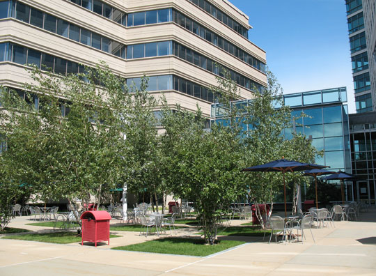

Frontline : Brief History
Frontline was a production of the flagship Public Broadcasting System (PBS) station WGBH-TV in Boston, Massachusetts. The show was the brainchild of David Fanning , a South African-born former newspaper journalist turned filmmaker. WGBH’s dynamic head of national programming, Peter McGhee, had hired Fanning in 1977 to produce a series of international documentaries known as World . Executive Producer Fanning’s 1980 film “Death of a Princess,” about the execution of a Saudi woman, received global acclaim as well as high-level criticism: from the State Department, the Saudi government, and the Mobil Oil Corporation—at the time sole underwriter of a WGBH-produced national PBS series, Masterpiece Theatre . [1]
 But WGBH stood by Fanning and later asked him to create a new PBS series, Frontline , which debuted in January 1983. The series would produce public affairs documentaries—a genre growing rare as television news networks turned increasingly to feature-filled news magazines designed to entertain as much as educate. By 2005, Frontline was producing some 20 programs a year. Most ran for an hour, a few for 90 minutes; occasionally there were special limited series. The unit worked entirely with independent producers who reported to Executive Producer Fanning, Executive Editor Louis Wiley Jr., Executive Producer for Special Projects Michael Sullivan, and Editorial Director Marrie Campbell. A staff of some 25 supported the executive team. [2]
Frontline topics—both domestic and international—ranged widely, from healthcare to war to genocide, mass murder, racial identity, and professional sports. In its first 20 years, it turned out 420 programs. Starting with the 1988 presidential election, it also produced biographies of presidential candidates, which aired under the title “The Choice.” After the terrorist attacks of September 11, 2001, the unit postponed its scheduled fall line-up and instead for six months ran in-depth programs on various aspects of terrorism. Later it produced numerous films on the war in Iraq.
While it provoked controversy from time to time, over the years Frontline earned top journalism awards many times over from numerous US and international organizations. Frontline did not escape, however, the changes and challenges that came with the emergence in the 1990s of the Internet as a source for news and entertainment. As with other broadcast network news programs, Frontline ratings had declined over time. They had hit a high in 1998 with “From Jesus to Christ,” which attracted more than 14.4 million viewers and “The Farmer’s Wife,” which drew more than 16.6 million. But by 2005, the average per show viewership was a little under 5 million. Production costs ran on average $500,000 per broadcast hour.
In 1995, Frontline became one of the first news organizations to create an in-depth website to accompany its broadcasts. The website provided interviews with the producer, edited transcripts of the interviews conducted for the film, chronologies, sidebars, essays, and other supporting materials of potential interest to viewers (as well as an online viewer forum). After they had been broadcast, Frontline also posted most of the documentaries online for viewing at will.